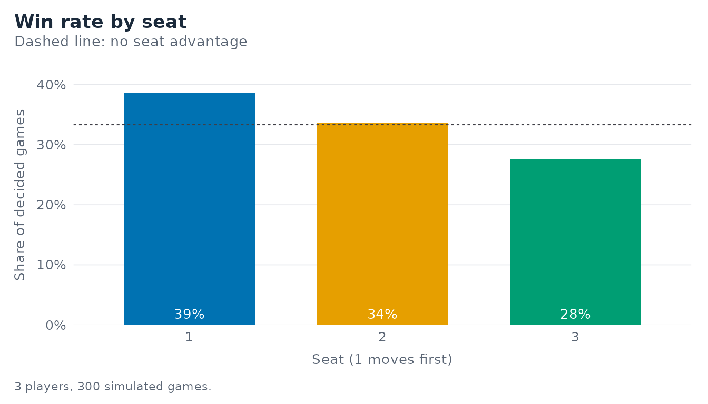
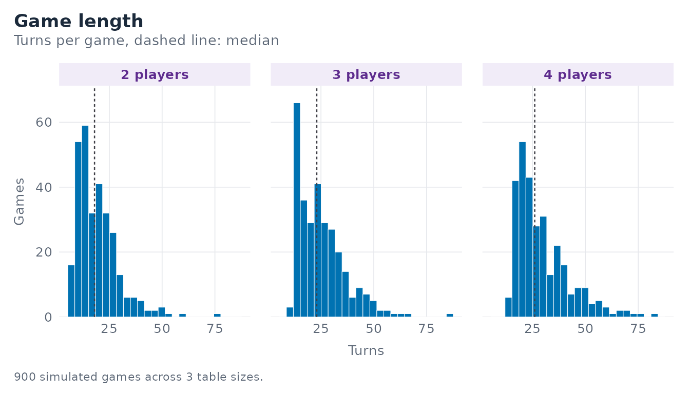
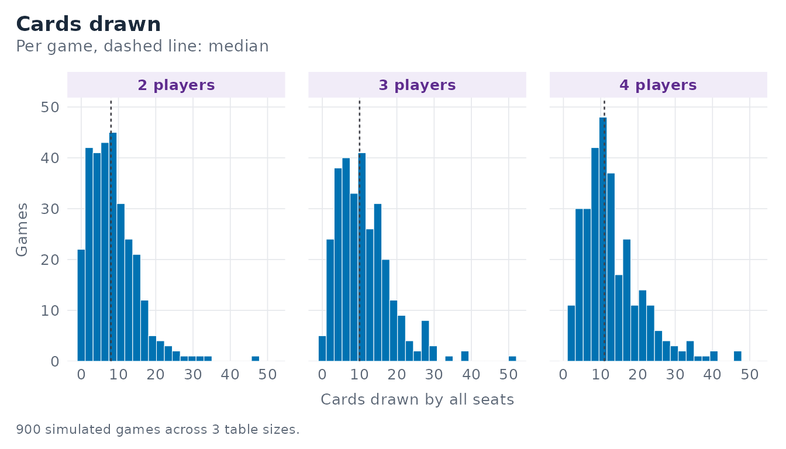
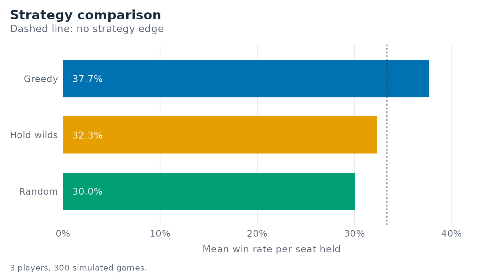
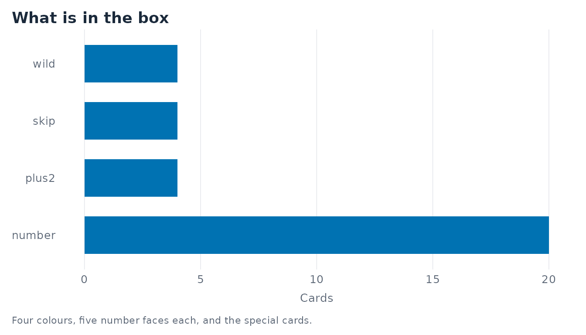

You have a box of “der kleine ICE”, the Deutsche Bahn children’s Mau Mau deck, and a question the box does not answer: does it matter where you sit? This vignette walks from the deck to that answer in five minutes.
The deck is the single source of truth
Everything the package does is derived from one specification.
spec <- mm_deck_spec()
spec
#> <mm_deck_spec>: 32 cards in 4 colours
#> • colours: "red", "green", "blue", and "yellow"
#> • number faces per colour: 1, 2, 3, 4, and 5
#> • +2 per colour: 1; skip per colour: 1
#> • wild cards: 4
#> • cards per colour: 7The box states 32 cards. Four colours, one +2 and one
skip per colour, and four wild cards leave exactly five number faces per
colour - which is how the default gets to 32. The face values are
1:5, confirmed against the physical deck; change them here
and every simulation, summary, and plot in the package follows.
Any specification that does not total 32 is accepted, but it warns, so a wrongly built deck can never pass unnoticed:
wrong <- try(mm_deck_spec(numbers = 0:5), silent = TRUE)
#> Warning: ! The deck specification totals 36 cards, but the box states 32.
#> ℹ Correct the `mm_deck_spec()` arguments after a physical card count; every
#> simulation, summary, and plot follows from them.mm_build_deck() turns the specification into one row per
physical card:
deck <- mm_build_deck(spec)
deck
#> # A tibble: 32 × 3
#> color value type
#> <chr> <int> <chr>
#> 1 red 1 number
#> 2 red 2 number
#> 3 red 3 number
#> 4 red 4 number
#> 5 red 5 number
#> 6 green 1 number
#> 7 green 2 number
#> 8 green 3 number
#> 9 green 4 number
#> 10 green 5 number
#> # ℹ 22 more rows
table(deck$type)
#>
#> number plus2 skip wild
#> 20 4 4 4One game
mm_play_game() deals a table, plays it out against
artificial opponents, and returns a single tidy row.
mm_play_game(n_players = 3, seed = 1)
#> # A tibble: 1 × 7
#> winner turns draws n_players hand_sizes strategy trace
#> <int> <int> <int> <int> <list> <list> <list>
#> 1 1 35 16 3 <int [3]> <chr [3]> <tibble [0 × 7]>The trace column is the audit trail. Switch it on and
every step records the size of every pile, which is how the package
checks that no card is ever lost or duplicated:
traced <- mm_play_game(n_players = 3, seed = 1, trace = TRUE)
head(traced$trace[[1]])
#> # A tibble: 6 × 7
#> turn player action hand_cards draw_pile discard_pile total
#> <int> <int> <chr> <int> <int> <int> <int>
#> 1 0 1 deal 15 16 1 32
#> 2 1 1 play_plus2 14 16 2 32
#> 3 2 2 draw_penalty 16 14 2 32
#> 4 3 3 play_plus2 15 14 3 32
#> 5 4 1 draw_penalty 17 12 3 32
#> 6 5 2 play_wild 16 12 4 32
unique(traced$trace[[1]]$total)
#> [1] 32Turn by turn
For an interactive front end - or for understanding a rule - play one action at a time.
game <- mm_new_game(n_players = 3, seed = 42)
game
#> <mm_game>: 3 players, turn 0
#> • top card: "number" "red" (colour in force: "red")
#> • hand sizes: 5, 5, and 5
#> • draw pile: 16; discard pile: 1
#> • to move: seat 1
mm_top_card(game)
#> # A tibble: 1 × 4
#> color value type active_color
#> <chr> <int> <chr> <chr>
#> 1 red 3 number red
mm_hand(game, player = 1)
#> # A tibble: 5 × 5
#> card color value type legal
#> <int> <chr> <int> <chr> <lgl>
#> 1 17 yellow 2 number FALSE
#> 2 25 blue NA plus2 FALSE
#> 3 18 yellow 3 number TRUE
#> 4 7 green 2 number FALSE
#> 5 14 blue 4 number FALSE
mm_legal_moves(game)
#> [1] 3mm_step() advances the game. Left alone it asks the
seat’s strategy; given a card position it plays that card, which is what
the Shiny application does with your clicks.
game <- mm_step(game, card = mm_legal_moves(game)[[1]])
game
#> <mm_game>: 3 players, turn 1
#> • top card: "number" "yellow" (colour in force: "yellow")
#> • hand sizes: 4, 5, and 5
#> • draw pile: 16; discard pile: 2
#> • to move: seat 2Many games
mm_simulate() repeats the whole thing and returns one
row per game.
sims <- mm_simulate(n = 300, n_players = 3, seed = 7)
sims
#> # A tibble: 300 × 8
#> game winner turns draws n_players hand_sizes strategy trace
#> <int> <int> <int> <int> <int> <list> <list> <list>
#> 1 1 1 13 2 3 <int [3]> <chr [3]> <tibble [0 × 7]>
#> 2 2 2 17 6 3 <int [3]> <chr [3]> <tibble [0 × 7]>
#> 3 3 3 15 4 3 <int [3]> <chr [3]> <tibble [0 × 7]>
#> 4 4 2 32 13 3 <int [3]> <chr [3]> <tibble [0 × 7]>
#> 5 5 2 13 3 3 <int [3]> <chr [3]> <tibble [0 × 7]>
#> 6 6 3 14 1 3 <int [3]> <chr [3]> <tibble [0 × 7]>
#> 7 7 1 23 13 3 <int [3]> <chr [3]> <tibble [0 × 7]>
#> 8 8 2 43 24 3 <int [3]> <chr [3]> <tibble [0 × 7]>
#> 9 9 2 29 12 3 <int [3]> <chr [3]> <tibble [0 × 7]>
#> 10 10 2 20 11 3 <int [3]> <chr [3]> <tibble [0 × 7]>
#> # ℹ 290 more rowsDoes the seat matter?
mm_win_rate(sims)
#> # A tibble: 3 × 6
#> n_players seat strategy wins games win_rate
#> <int> <int> <chr> <int> <int> <dbl>
#> 1 3 1 greedy 116 300 0.387
#> 2 3 2 greedy 101 300 0.337
#> 3 3 3 greedy 83 300 0.277
mm_plot_win_rate(sims)
Seat 1 moves first and gets there first often enough to show up: with identical opponents, the first seat wins more than its share, and the win rate falls monotonically down the table. Three hundred games is not enough to pin that down - over 4000 games per table size the first seat sits at 0.515 (two players), 0.375 (three), and 0.283 (four), against chance levels of 0.500, 0.333, and 0.250.
How long do games run, and how much drawing is there?
by_size <- dplyr::bind_rows(
mm_simulate(n = 300, n_players = 2, seed = 21),
mm_simulate(n = 300, n_players = 3, seed = 22),
mm_simulate(n = 300, n_players = 4, seed = 23)
)
mm_game_length(by_size)
#> # A tibble: 3 × 7
#> n_players games mean_turns sd_turns min_turns median_turns max_turns
#> <int> <int> <dbl> <dbl> <dbl> <dbl> <dbl>
#> 1 2 300 19.3 9.83 7 18 77
#> 2 3 300 25.1 11.4 10 23 86
#> 3 4 300 29.5 12.6 14 26 82
mm_draw_summary(by_size)
#> # A tibble: 3 × 7
#> n_players games mean_draws sd_draws min_draws median_draws max_draws
#> <int> <int> <dbl> <dbl> <dbl> <dbl> <dbl>
#> 1 2 300 8.50 6.33 0 8 47
#> 2 3 300 11.2 7.26 0 10 51
#> 3 4 300 13.1 7.98 2 11 47
mm_plot_game_length(by_size, bins = 25)
mm_plot_draws(by_size, bins = 25)
Game length is strongly right-skewed: most games end quickly, a few
drag on while the +2 cards circulate.
Comparing strategies
Three strategies ship with the package, and writing your own is a matter of writing a function. Seat them at one table and see:
mixed <- mm_simulate(
n = 300,
n_players = 3,
strategies = list(
mm_strategy_greedy(),
mm_strategy_random(),
mm_strategy_hold_wilds()
),
seed = 11
)
mm_win_rate(mixed)
#> # A tibble: 3 × 6
#> n_players seat strategy wins games win_rate
#> <int> <int> <chr> <int> <int> <dbl>
#> 1 3 1 greedy 113 300 0.377
#> 2 3 2 random 90 300 0.3
#> 3 3 3 hold_wilds 97 300 0.323
mm_plot_strategy_compare(mixed)
Three hundred games at one seating is a demonstration, not evidence.
Rotating a single hold_wilds seat through every position
against greedy opponents, 1500 games per rotation, hoarding does pay: it
lands at 0.550 (two players), 0.378 (three), and 0.286 (four) against
chance levels of 0.500, 0.333, and 0.250. A wild card is legal on any
discard, and that insurance against a forced draw is worth more than the
tempo lost by holding it. mm_strategy_random() goes the
other way, finishing below chance and below greedy.
Matching the figures
Every plot is an ordinary ggplot object, so you can keep
building on it. The theme the package draws in is exported too, which is
the shortest way to make a figure of your own sit beside the others.
ggplot2::ggplot(mm_build_deck(), ggplot2::aes(y = type)) +
ggplot2::geom_bar(fill = "#0072B2", width = 0.66) +
ggplot2::labs(
title = "What is in the box",
x = "Cards",
y = NULL,
caption = "Four colours, five number faces each, and the special cards."
) +
mm_theme() +
ggplot2::theme(panel.grid.major.y = ggplot2::element_blank())
Writing your own strategy
A strategy is a function of (hand, state) returning the
position of the card to play, or NA to draw and pass. It
must return one of state$legal.
lowest_first <- structure(
function(hand, state) {
if (length(state$legal) == 0) {
return(NA_integer_)
}
legal <- state$legal
values <- hand$value[legal]
values[is.na(values)] <- 99L
legal[[which.min(values)]]
},
class = c("mm_strategy", "function"),
strategy_name = "lowest_first",
color_picker = function(hand, state) state$active_color
)
mm_win_rate(mm_simulate(
n = 200,
n_players = 3,
strategies = list(lowest_first, mm_strategy_greedy(), mm_strategy_greedy()),
seed = 5
))
#> # A tibble: 3 × 6
#> n_players seat strategy wins games win_rate
#> <int> <int> <chr> <int> <int> <dbl>
#> 1 3 1 lowest_first 69 200 0.345
#> 2 3 2 greedy 76 200 0.38
#> 3 3 3 greedy 55 200 0.275